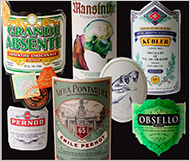

Absinthes to Go Mad Over
ABSINTHE? So devil may care, so deliciously disreputable, so ... louche. But it’s poisonous, no? It eats your brain and drives you crazy!If nothing else, a century of prohibition on absinthe gave it the sort of aura of dissolute glamour that would-be brooding artists would drown their agents for. The two faces of absinthe offered possibilities to idealists the world over, searching for a muse or testing the limits of their risk-taking.
Consider the cast of mythological absinthe drinkers: the vulnerable painter and poet, too sensitive for this mean old world; the tormented soul, unable to snap out of his self-loathing; the rakish hedonist, seeking one big, lurid rush; the wealthy dilettante, dipping a toe in bohemia; and of course, all manner of willing women.
 But now absinthe is legal again, and the romance of belle époque naughtiness must give way to what’s in the glass. Pull over, you disillusioned dreamers: with no laws to break, no frissons of danger, let the mystification stop right now.
Since absinthe was legalized in the United States in 2007, it has gone from forbidden fruit to virulent weed. Once smuggled from Eastern Europe or procured from back-alley producers, absinthe is now just another bottle on the bar. Yet mystique continues as marketing.
To give absinthe its moment in the harsh light of day, the tasting panel sampled 20 bottles. Florence Fabricant and I were joined by Audrey Saunders, an owner of the Pegu Club on West Houston Street, and Pete Wells, editor of the Dining section, who writes about drinks.
So what makes absinthe absinthe? Essentially it is a neutral spirit infused with myriad herbs and botanicals, centering around anise, fennel and a specific type of wormwood, Artemisia absinthium, from which absinthe takes its name. This wormwood contains small amounts of thujone, a compound once thought to affect the mind. It’s understood now that hallucinations and other health issues attributed to overindulging in absinthe were more a result of alcohol poisoning due to the high alcohol content, typically 50 to 70 percent.
Few things demystify absinthe more than the daunting prospect of 20 glasses in front of you. For instance, all those nicknames — the green fairy, the green muse, the green torment, the green oblivion — might lead one to believe that absinthe is green, right? Often, but not always.
The absinthes offered numerous variations on green, from pale celadon and shimmering aquamarine to extra virgin olive oil to dizzyingly garish shades that don’t exist in nature outside of South Beach nightclubs. But one absinthe was turquoise, which is near enough to green, I suppose. Another was mouthwash blue. A few were completely clear. Those were from Switzerland and included our favorite in the tasting, Kübler. More on that soon enough.
What was plain to all of us was that absinthe, stripped of its mystique, can be wonderfully enjoyable but also confusing.
For example, the ritual of service: the slow drip of water, from an Art Nouveau fountain through a sugar cube held in a slotted spoon over the glass, seeping down into a pool of green like sweetened tears. Oops, again with the mystique.
Here’s what’s important to know: forget the sugar, remember the water. Despite the reverence today for vintage bottles of pre-prohibition absinthe, much of what was produced back in the old days was harsh and industrial. Sugar might have been a necessary addition to make it palatable. The absinthes in our tasting had enough natural (and possibly unnatural) sweetness that adding sugar was unnecessary. The quality of most of them was unexpectedly good.
“I was surprised by how few lousy ones there were,” said Pete, whose experiences with contraband absinthes had not always been pleasant.
Without water, though, almost any absinthe would be difficult to endure. Absinthe in general is simply too strong to drink undiluted. Of our 20 bottles, 13 were 60 percent alcohol or more. Not only do they require water, they require just the right amount, anywhere from three to five parts water to one part absinthe, the amount rising — usually but not always — in tandem with the original strength of each bottle.
The best method, we found, was to begin with a three-to-one ratio, and then, if the absinthe still tastes harsh, continue adding until a seductive balance is achieved. With too little water, for example, Lucid, No. 9 on our list, was hot and harsh at 62 percent alcohol. By slowly adding more to achieve the right balance, the Lucid became mellow and inviting.
Water not only changes the flavors, it almost magically alters the appearance of the absinthe. As you slowly add water, the liquid in the glass seems to thicken, and transforms into an opalescent pastel cloud. The French call this effect the louche (which has the wonderful double meaning of turbulent in French and disreputable in English). Technically, when absinthe is distilled, the anise and fennel oils dissolve into the alcohol. As the water dilutes the alcohol, it frees the oils from their molecular prison, and they form a cloudy suspension.
The louche effect occurs even with clear Swiss absinthes, like our No. 1, Kübler, which turned a brilliant white in the glass. It offered rich, warm anise and herbal flavors that were deliciously subtle rather than greatly complex.
Among our top absinthes, the Grande Absente, the Pernod and the Émile Pernot Vieux Pontarlier all were beautifully integrated, with balanced flavors centering on anise, licorice and fennel, augmented by herbs and citrus. The next rank, particularly the St. George — with a spider monkey on its label beating on a skull — and the Jade Nouvelle-Orléans, offered greater complexity, with more pronounced floral and herbal flavors, and less focus on anise. Absinthe connoisseurs often seem to prefer these to the bottles that we favored.
One Swiss absinthe, Mansinthe, distilled to the specifications of Marilyn Manson, was not clear but a more common shade of green. Its brininess divided the panel. It was our No. 10.
I mentioned that we had 20 absinthes in our tasting. Actually, we had 19, with one absinthe substitute, Absente, which was distilled in France using a different species of wormwood and marketed in the United States during the ban. It’s not absinthe, but we liked it very much, particularly its iridescent louche and straightforward but rich anise flavor. The same distiller now makes Grande Absente, an authentic absinthe, which was our No. 2 bottle.
As appealing as we found absinthe, we did not agree on its best role. Florence thought it would be a good aperitif, like a pastis, which is made with anise substitutes like Pernod or Ricard and blended with water to the same pearly result. I disagreed, thinking that absinthe’s herbal flavors made it a better digestif, settling the stomach after a meal, like Chartreuse or amaro. We all agreed that flaming absinthe cocktails are silly affectations.
While a little absinthe can be quite pleasant, a lot, as with any other strong spirit, will make you drunk. Perhaps, if you are of an Oscar Wilde bent, too much absinthe will do to you what it did to him: “After the first glass, you see things as you wish they were,” he said in one of his many disquisitions on absinthe. “After the second you see things as they are not. Finally you see things as they really are, and that is the most horrible thing in the world.”
Personally, I prefer how martinis affected Dorothy Parker:
I like to have a martini,
Two at the very most.
After three I’m under the table,
after four I’m under my host.
Absinthes to Go Mad Over - NY Times